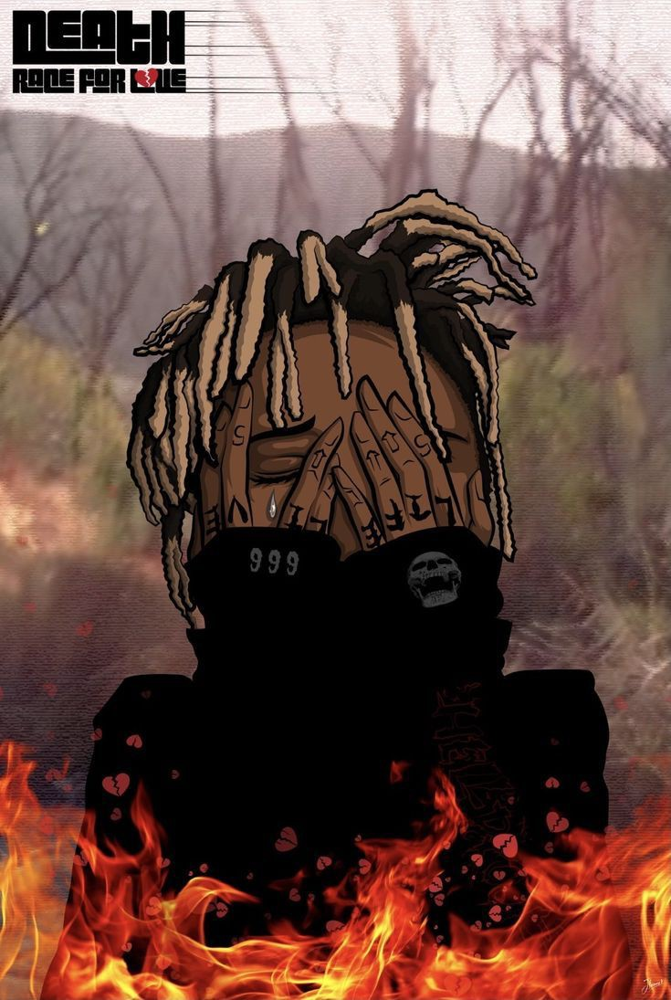

LUCID DREAMS
by Juice Wrld

QUIET by Juice Wrld

Midnight Hours
by Juice Wrld
INSPIRE ME
by Juice Wrld
"JERALD ANTHONY HIGGINS "
1998-2019
Jarad Anthony Higgins, known professionally as Juice Wrld,
was an American rapper. Throughout his career of four years, he was a leading figure in the emo rap and SoundCloud rap genres which garnered mainstream attention during the mid-to-late... Wikipedia
Born: 2 December 1998, Chicago, Illinois, United States
Died: 8 December 2019 (age 21 years),
Advocate Christ Medical Center, Oak Lawn, Illinois, United States
Full name: Jarad Anthony Higgins
Parents: Carmella Wallace.
LUCID DREAMS
by Juice Wrld
QUIET by Juice Wrld
Midnight Hours
by Juice Wrld
INSPIRE ME
by Juice Wrld